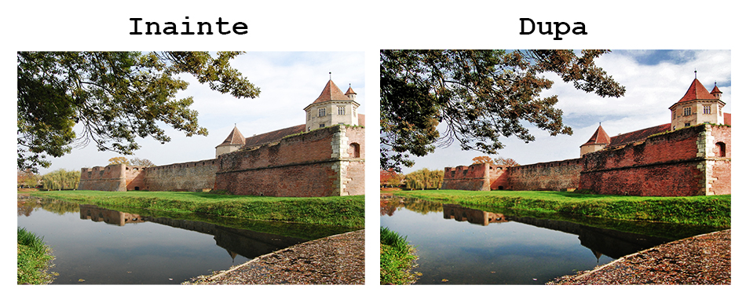
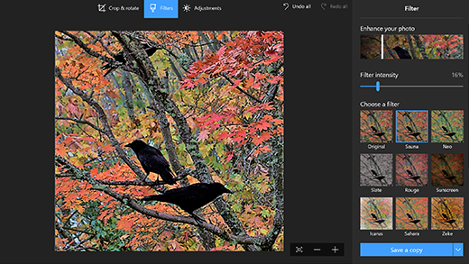
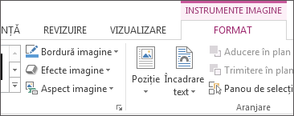
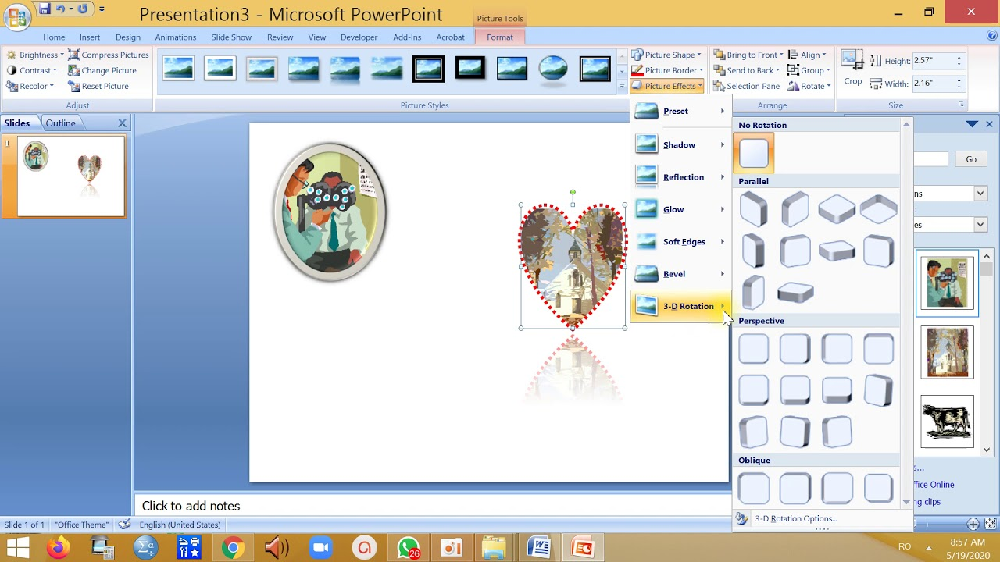

Editarea și elaborarea imaginilor sau a fotografiilor
cuprinde totalitatea proceselor de modificare sau creare a imaginilor, în cazul în
care acestea sunt fotografii digitale, fotografii analogice tradiționale sau ilustrații.
Editarea fotografiilor analogice tradiționale este cunoscută sub denumirea de retușare, folosind
instrumente ca airbrush (aerograf) pentru a modifica fotografiile, sau editând ilustrațiile cu orice alte mijloace
tradiționale artistice. Programele grafice de calculator, care pot fi grupate în editoare grafice vectoriale, editoare
grafice raster și modelatoare 3D, sunt unelte primare cu care un utilizator poate manipula, îmbunătăți și transforma imaginile.
Multe programe de editare a imaginilor sunt folosite de asemenea pentru a crea artă pe computer, pornind de la zero.

Unde putem elabora și edita imagini?
Aplicațiile standart Windows Office permit retușarea cu elemente de bază, ca ajustarea luminozității, contrastului, a culorilor. Există însă, pe lângă office, aplicații de editare profesională a imaginilor, cum ar fi Photoshop.

Ce modificări pot fi aplicate imaginilor în aplicațiile Windows Office?
Ajustarea luminozității, contrastului sau clarității
- Selectați imaginea.
- Selectați Format imagine și selectați Corecții.
- Treceți cu indicatorul peste opțiuni pentru a le previzualiza și selectați-o pe cea dorită.
Pentru mai multe informații, consultați Modificarea luminozității, contrastului sau clarității unei imagini.
Aplicarea efectelor artistice
- Selectați imaginea.
- Selectați Format imagine și efecte artistice.
- Treceți cu mouse-ul peste opțiuni pentru a le previzualiza, apoi selectați-o pe cea dorită.
Modificarea culorii
- Selectați imaginea.
- Selectați Format imagine și Culoare.
- Treceți cu mouse-ul peste opțiuni pentru a le previzualiza, apoi selectați-o pe cea dorită.
Aplicarea efectelor de imagine
- Selectați imaginea.
- Selectați Format imagine și efecte imagine.
- Selectați ceea ce doriți: Umbrire, Reflexie, Strălucire, Muchii atenuate, Reliefare sau Rotație 3-D.
Pentru mai multe informații, consultați Adăugarea sau modificarea unui efect pentru o imagine.
Eliminarea fundalului
Pentru informații, consultați Eliminarea unui fundal de imagine.
Comprimarea imaginii
- Selectați imaginea.
- Selectați Format imagine și Comprimare imagini.
- Selectați opțiunile dorite, apoi selectați OK.
Pentru mai multe informații, consultați Reducerea dimensiunii fișierului unei imagini.

